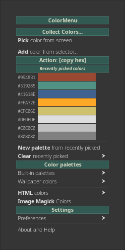
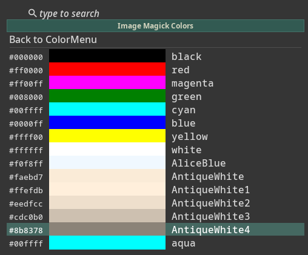
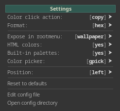

Collecting colors

You can pick color from screen and add color from GTK selector.
While picking colors recently picked colors are presented in menu so you can copy their codes and save them as own color palette.
Copy or paste color codes
By clicking on color in Color Menu you can copy or paste color code in needed format - depending how Colormenu is configured.
Currently configured action is presented in menu.
You can click on yellow buttons in tables below to set up needed: action and format
Actions
| Action |
Description |
| Copy |
copy color code to the clipboard |
| Paste |
paste color code immadietely in cursor position |
Formats
| Format |
Description |
| hex |
hexadecimal #4e8cd6 |
| rgb |
rgb rgb(78, 140, 214) |
| rgba |
rgba rgba(78, 140, 214, 1.0) |
Palette management
Color Menu comes with several built-in color palettes.
It also generates color palette from currently used wallpaper automatically.
You can create additional own palettes from colors picked from screen or image.
Pallette format
ImageMagick colors selector
ImageMagick colors selector let you pick color codes from a list of named colors recognized by ImageMagick.
The list contains more than 600 named colors, you can search colors by name.

Settings

To configure ColorMenu use Settings submenu.